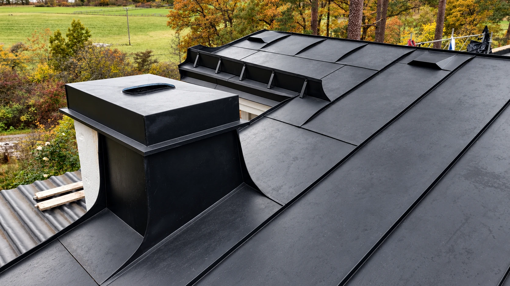

Byggnadsplåtslageri
MITT HANTVERK
Tak, fasader och beslag i plåt, på villor lika gärna som större byggnader.
- Falsade tak och bandtäckning
- Skorstensbeslag och huvar
- Fönsterbleck och fasadbeslag
- Vattenavrinning: hängrännor och stuprör
- Taksäkerhet: takbryggor och takstegar
Projekt och referenser publiceras här.
Har du ett liknande projekt? Hör av dig så pratar vi om det.